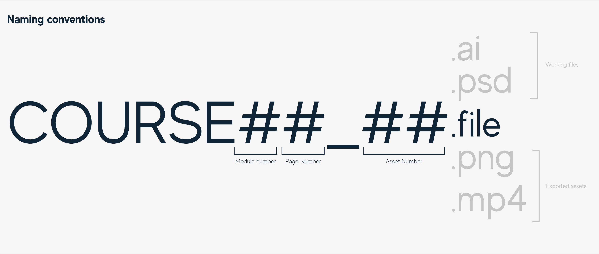

Multimedia guidelines
Multimedia naming conventions
Working and exported 'platform-ready' assets follow the same basic naming structure:
- Course Code
- The shortcode of the course (STAT, MATH, BARD, etc.)
- Module number
- Which module or section the asset appears in?
- Page number
- Which page number does the asset appear in?
- Asset number
- The assets start from 00 which allows for any number of assets across any singular page and includes the assets appearing in a video. E.g - the video STAT11_08.mp4 may contain the graphical assets STAT11_05.png, STAT11_06.png, and the animation asset STAT11_07.mp4. These relations will be made clear in the storyboard(s) for the video and module page.